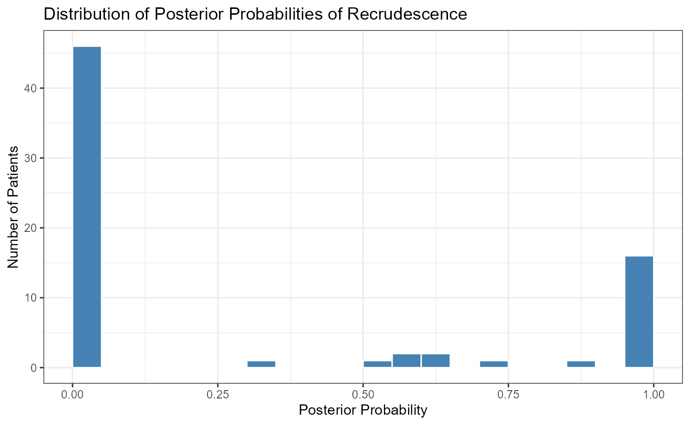

Introduction
MalReBay package is designed to determine whether a
recurrent malaria infection is a recrudescence (a
relapse of the original infection) or a reinfection (a
new infection from a separate mosquito bite). It uses a Bayesian MCMC
(Markov chain Monte Carlo) framework to analyze paired genotyping data
from a patient’s initial infection (Day 0) and their subsequent day of
recurrence (Day X).
This tutorial provides a step-by-step guide to the main analysis workflow, from loading your data to interpreting the final results. We will first review the conceptual framework of the package and then walk through a practical example, from loading data to interpreting the final results.
2. The MalReBay Conceptual Workflow
Here we will have the conceptual steps that MalReBay
takes to get from your raw data to the final classification. The main
classify_infections() function automates this entire
pipeline for you.

The workflow consists of three main stages:
Data Processing
This initial stage is a sequential pipeline designed to prepare your data for analysis.
Import Data: The process begins with
import_data(), which reads your Excel file, automatically detects the data type (length-polymorphic vs. amplicon sequencing), and performs initial cleaning.Define Alleles: For length-polymorphic data,
define_alleles()groups raw fragment lengths into discrete, well-defined allele bins.Calculate Frequencies:
calculate_frequencies3()computes the initial population-level frequency of each allele, which provides a starting point for the MCMC model.Recode Alleles: Finally,
recode_alleles()converts the raw allele measurements into integer-based codes corresponding to the defined bins.
The output of this stage is a clean, structured dataset ready for the Bayesian engine.
The Bayesian MCMC Algorithm
This is the core of the package. It uses a Gibbs sampling approach to iteratively explore the probability space and find the most likely classification for each patient.
Coordination: The
run_all_sites()function manages the analysis for each geographical site. For each site, it calls the MCMC engine (run_one_chain()orrun_one_chain_ampseq()).-
Iteration: The engine runs for many iterations, and in each step, it updates its estimates for:
- The identity of unobserved (“hidden”) alleles using
switch_hidden_length()orswitch_hidden_ampseq(). - The population-level allele frequencies using
findposteriorfrequencies().
- The identity of unobserved (“hidden”) alleles using
Convergence: The simulation runs in parallel across multiple chains and automatically checks for convergence, ensuring the results are stable and reliable.
Summarization and Output
Once the MCMC has converged, the package summarizes the vast amount of data generated during the simulation into user-friendly outputs.
Posterior Probabilities: The primary output is a table of posterior probabilities of recrudescence for each patient.
Diagnostic Reports: The
generate_likelihood_diagnostics()function creates plots (traceplots, Gelman-Rubin plots) to verify model convergence.Allele Frequency Plots: The
generate_allele_frequency_plot()utility can be used to visualize the raw allele distributions.Marker-Level Analysis: A detailed table is generated showing the contribution of each genetic marker to the final classification.
Here we will walk through a practical example of using the
MalReBay package to classify recurrent malaria infections.
This example will demonstrate how to set up the analysis, run the MCMC
simulation, and interpret the results.
1. Setup
First, we need to load the MalReBay package, along with
a couple of other useful packages for data handling and plotting.
2. The Input Data
The main input for MalReBay is an Excel file with genotyping data. It should include patient ID, sampling day, Day 0, Day of recurrence, site/region, and allele calls for each marker. If site information is missing, add it before analysis. While the first three columns are recommended, the code also accepts data where patient ID and sampling day are combined into one column. Including Day 0 samples from patients without recurrence is optional but helpful, as it improves estimation of allele frequencies and increases classification accuracy.
The package includes an example dataset from Angola that we will use for this tutorial.
The classify_infections() function expects this data to
be in a ‘wide’ format, where: * There is a Sample.ID column
that uniquely identifies each sample and includes “Day 0” or “Day
Failure”. * There is a Site column indicating the
geographical origin. * Allele calls for each marker are in columns named
like LocusName_AlleleNumber (e.g., TA40_1,
TA40_2, etc.).
Let’s get the file path to the example data included with the package.
# This command finds the example file within the installed MalReBay package
input_file <- system.file("extdata", "Angola_2021_TES_7NMS.xlsx",
package = "MalReBay")
print(input_file)
#> [1] "C:/Users/golumo/AppData/Local/R/win-library/4.5/MalReBay/extdata/Angola_2021_TES_7NMS.xlsx"3. Running the Analysis
The entire workflow is managed by the main function
classify_infections(). This function requires three main
arguments:
-
input_filepath: The path to your Excel data. -
mcmc_config: A list of settings for the MCMC simulation. -
output_folder: A directory where results and diagnostic plots will be saved.
Step 3.1: Define MCMC Configuration
For this example, we will use a minimal configuration for a quick
run. For a real analysis, you should consider using much larger
values for chunk_size and max_iterations and
increase or reduce the number of chains to ensure the model converges
properly. Please note running multiple chains (typically 3–4)
is recommended as it allows you to check whether all chains converge to
the same posterior distribution.
# NOTE: These settings are for a quick demonstration only.
quick_mcmc_config <- list(
n_chains = 2, # Run two parallel chains
chunk_size = 1000, # Check convergence every 1000 iterations
max_iterations = 1000, # Stop after a maximum of 1000 total iterations
rhat_threshold = 1.1, # A relaxed convergence threshold for the example
ess_threshold = 50 # A relaxed effective sample size for the example
)Step 3.2: Define an Output Folder
It’s good practice to save results to a dedicated folder. For this tutorial, we’ll create a temporary directory.
output_dir <- file.path(tempdir(), "MalReBay_tutorial_results")
if (!dir.exists(output_dir)) {
dir.create(output_dir)
}
print(output_dir)
#> [1] "C:\\Users\\golumo\\AppData\\Local\\Temp\\Rtmpo7gvyS/MalReBay_tutorial_results"Step 3.3: Execute the Main Function
Now we can run the analysis. classify_infections() will
print progress messages to the console, informing you about the data
type it detected, the sites it is analyzing, and the status of the MCMC
convergence. The ‘future’ package is used in the background for parallel
processing, so you can expect the analysis to run faster on multi-core
machines.
plan(multisession, workers = 2)
classification_summary <- classify_infections(
input_filepath = input_file,
mcmc_config = quick_mcmc_config,
output_folder = output_dir
)
#> INFO: Detected 'length_polymorphic' data format.
#> INFO: Following length-polymorphic data processing pipeline.
#> Warning in FUN(X[[i]], ...): NAs introduced by coercion
#> Warning in FUN(X[[i]], ...): NAs introduced by coercion
#> Warning in FUN(X[[i]], ...): NAs introduced by coercion
#> Warning in FUN(X[[i]], ...): NAs introduced by coercion
#> Warning in FUN(X[[i]], ...): NAs introduced by coercion
#> Warning in FUN(X[[i]], ...): NAs introduced by coercion
#> Warning in classify_infections(input_filepath = input_file, mcmc_config =
#> quick_mcmc_config, : The following requested markers were NOT found and will be
#> ignored: PolyA, TA42, TA81, TA87, TA40, ARAII, PFG377, TA60, K1, 3D7, MAD20,
#> RO33, R033, FC27, IC, glurp
#> Proceeding with analysis for these markers: 313, 383, TA1, POLYA, PFPK2, 2490, TA109
#> The model is running MCMC analysis...
#> Number of patient pairs (nids) found: 19
#> INFO: Preparing LENGTH-POLYMORPHIC MCMC engine for site: Benguela
#> -> Binning method is: microsatellite
#> -> Found 3 columns for this locus.
#> -> Binning method is: microsatellite
#> -> Found 3 columns for this locus.
#> -> Binning method is: microsatellite
#> -> Found 5 columns for this locus.
#> -> Binning method is: microsatellite
#> -> Found 4 columns for this locus.
#> -> Binning method is: microsatellite
#> -> Found 5 columns for this locus.
#> -> Binning method is: microsatellite
#> -> Found 3 columns for this locus.
#> -> Binning method is: microsatellite
#> -> Found 5 columns for this locus.
#>
#> Generating convergence diagnostics for site: Benguela
#> Gelman-Rubin R-hat for Log-Likelihood:
#> Potential scale reduction factors:
#>
#> Point est. Upper C.I.
#> loglikelihood 1.08 1.28
#>
#>
#> Effective Sample Size (ESS):
#> loglikelihood
#> 163.9257
#> Number of patient pairs (nids) found: 13
#> INFO: Preparing LENGTH-POLYMORPHIC MCMC engine for site: Lunda Sul
#> -> Binning method is: microsatellite
#> -> Found 3 columns for this locus.
#> -> Binning method is: microsatellite
#> -> Found 3 columns for this locus.
#> -> Binning method is: microsatellite
#> -> Found 5 columns for this locus.
#> -> Binning method is: microsatellite
#> -> Found 4 columns for this locus.
#> -> Binning method is: microsatellite
#> -> Found 5 columns for this locus.
#> -> Binning method is: microsatellite
#> -> Found 3 columns for this locus.
#> -> Binning method is: microsatellite
#> -> Found 5 columns for this locus.
#>
#> Generating convergence diagnostics for site: Lunda Sul
#> Gelman-Rubin R-hat for Log-Likelihood:
#> Potential scale reduction factors:
#>
#> Point est. Upper C.I.
#> loglikelihood 1.31 2.05
#>
#>
#> Effective Sample Size (ESS):
#> loglikelihood
#> 33.81928
#> Number of patient pairs (nids) found: 38
#> INFO: Preparing LENGTH-POLYMORPHIC MCMC engine for site: Zaire
#> -> Binning method is: microsatellite
#> -> Found 3 columns for this locus.
#> -> Binning method is: microsatellite
#> -> Found 3 columns for this locus.
#> -> Binning method is: microsatellite
#> -> Found 5 columns for this locus.
#> -> Binning method is: microsatellite
#> -> Found 4 columns for this locus.
#> -> Binning method is: microsatellite
#> -> Found 5 columns for this locus.
#> -> Binning method is: microsatellite
#> -> Found 3 columns for this locus.
#> -> Binning method is: microsatellite
#> -> Found 5 columns for this locus.
#>
#> Generating convergence diagnostics for site: Zaire
#> Gelman-Rubin R-hat for Log-Likelihood:
#> Potential scale reduction factors:
#>
#> Point est. Upper C.I.
#> loglikelihood 1.09 1.36
#>
#>
#> Effective Sample Size (ESS):
#> loglikelihood
#> 114.7537
#>
#> --- Debug: Structure of MCMC results ---
#> List of 6
#> $ classifications:List of 3
#> ..$ Benguela : num [1:19, 1:150] 0 0 1 1 0 0 0 0 0 0 ...
#> ..$ Lunda Sul: num [1:13, 1:150] 0 1 0 0 0 0 1 1 0 0 ...
#> ..$ Zaire : num [1:38, 1:150] 1 0 0 0 0 0 0 1 0 0 ...
#> $ ids :List of 3
#> ..$ Benguela : chr [1:19] "BD21-002" "BD21-040" "BD21-041" "BD21-053" ...
#> ..$ Lunda Sul: chr [1:13] "LL21-008" "LL21-010" "LL21-027" "LL21-037" ...
#> ..$ Zaire : chr [1:38] "ZL21-203" "ZL21-204" "ZL21-209" "ZL21-218" ...
#> $ locus_summary :List of 3
#> ..$ Benguela :'data.frame': 19 obs. of 4 variables:
#> .. ..$ patient_id : chr [1:19] "BD21-002" "BD21-040" "BD21-041" "BD21-053" ...
#> .. ..$ n_available_d0 : num [1:19] 7 7 7 7 7 7 7 7 7 7 ...
#> .. ..$ n_available_df : num [1:19] 7 7 7 5 7 7 7 7 5 7 ...
#> .. ..$ n_comparable_loci: num [1:19] 7 7 7 5 7 7 7 7 5 7 ...
#> ..$ Lunda Sul:'data.frame': 13 obs. of 4 variables:
#> .. ..$ patient_id : chr [1:13] "LL21-008" "LL21-010" "LL21-027" "LL21-037" ...
#> .. ..$ n_available_d0 : num [1:13] 7 7 7 7 7 7 7 7 7 7 ...
#> .. ..$ n_available_df : num [1:13] 7 7 2 7 4 6 7 6 5 4 ...
#> .. ..$ n_comparable_loci: num [1:13] 7 7 2 7 4 6 7 6 5 4 ...
#> ..$ Zaire :'data.frame': 38 obs. of 4 variables:
#> .. ..$ patient_id : chr [1:38] "ZL21-203" "ZL21-204" "ZL21-209" "ZL21-218" ...
#> .. ..$ n_available_d0 : num [1:38] 7 7 7 7 7 7 7 7 7 7 ...
#> .. ..$ n_available_df : num [1:38] 7 7 7 4 7 7 7 7 7 7 ...
#> .. ..$ n_comparable_loci: num [1:38] 7 7 7 4 7 7 7 7 7 7 ...
#> $ locus_lrs :List of 3
#> ..$ Benguela : num [1:19, 1:7, 1:150] 3.54e-01 5.16e-08 1.55e+01 1.11 6.67e-17 ...
#> .. ..- attr(*, "dimnames")=List of 3
#> .. .. ..$ : NULL
#> .. .. ..$ : NULL
#> .. .. ..$ : NULL
#> ..$ Lunda Sul: num [1:13, 1:7, 1:150] 0.00107 7.60857 1 0.02486 2.63464 ...
#> .. ..- attr(*, "dimnames")=List of 3
#> .. .. ..$ : NULL
#> .. .. ..$ : NULL
#> .. .. ..$ : NULL
#> ..$ Zaire : num [1:38, 1:7, 1:150] 2.43 9.43e-11 6.36e-20 1.00 4.37e-04 ...
#> .. ..- attr(*, "dimnames")=List of 3
#> .. .. ..$ : NULL
#> .. .. ..$ : NULL
#> .. .. ..$ : NULL
#> $ locus_dists :List of 3
#> ..$ Benguela : num [1:19, 1:7, 1:150] 2 8 0 0 16 2 0 6 10 6 ...
#> .. ..- attr(*, "dimnames")=List of 3
#> .. .. ..$ : NULL
#> .. .. ..$ : NULL
#> .. .. ..$ : NULL
#> ..$ Lunda Sul: num [1:13, 1:7, 1:150] 4 0 18 2 0 0 0 0 8 20 ...
#> .. ..- attr(*, "dimnames")=List of 3
#> .. .. ..$ : NULL
#> .. .. ..$ : NULL
#> .. .. ..$ : NULL
#> ..$ Zaire : num [1:38, 1:7, 1:150] 0 10 18 18 4 2 10 0 10 0 ...
#> .. ..- attr(*, "dimnames")=List of 3
#> .. .. ..$ : NULL
#> .. .. ..$ : NULL
#> .. .. ..$ : NULL
#> $ locinames :List of 3
#> ..$ Benguela : chr [1:7] "313" "383" "TA1" "POLYA" ...
#> ..$ Lunda Sul: chr [1:7] "313" "383" "TA1" "POLYA" ...
#> ..$ Zaire : chr [1:7] "313" "383" "TA1" "POLYA" ...
#> NULL
#> ----------------------------------------
#>
#>
#> --- Debug: Names in results$ids ---
#> [1] "Benguela" "Lunda Sul" "Zaire"
#> --- Debug: Names in results$classifications ---
#> [1] "Benguela" "Lunda Sul" "Zaire"
#> ----------------------------------
#>
#> --- Processing site: 'Benguela' ---
#> Is site_ids NULL? FALSE
#> Length of site_ids: 19
#> Is site_probs_matrix NULL? FALSE
#> Dimensions of site_probs_matrix: 19x150
#> Check passed. Calculating probabilities...
#>
#> --- Processing site: 'Lunda Sul' ---
#> Is site_ids NULL? FALSE
#> Length of site_ids: 13
#> Is site_probs_matrix NULL? FALSE
#> Dimensions of site_probs_matrix: 13x150
#> Check passed. Calculating probabilities...
#>
#> --- Processing site: 'Zaire' ---
#> Is site_ids NULL? FALSE
#> Length of site_ids: 38
#> Is site_probs_matrix NULL? FALSE
#> Dimensions of site_probs_matrix: 38x150
#> Check passed. Calculating probabilities...
#> Summary table saved to: C:\Users\golumo\AppData\Local\Temp\RtmpAzfzSn/MalReBay_tutorial_results/probability_of_recrudescence_summary.csv
#> Detailed marker-level summary saved to: C:\Users\golumo\AppData\Local\Temp\RtmpAzfzSn/MalReBay_tutorial_results/marker_level_summary.csv
plan(sequential)4. Interpreting the Output
The classify_infections() function returns a list
containing two key data frames: summary and
marker_details.
4.1 The Main Summary Table
The $summary data frame provides the main result for
each patient. Let’s look at the first few rows.
summary_df <- classification_summary$summary
knitr::kable(head(summary_df), caption = "Top rows of the classification summary.")| Site | Sample.ID | Probability | N_Available_D0 | N_Available_DF | N_Comparable_Loci |
|---|---|---|---|---|---|
| Benguela | BD21-002 | 0.00 | 7 | 7 | 7 |
| Benguela | BD21-040 | 0.00 | 7 | 7 | 7 |
| Benguela | BD21-041 | 1.00 | 7 | 7 | 7 |
| Benguela | BD21-053 | 0.98 | 7 | 5 | 5 |
| Benguela | BD21-075 | 0.00 | 7 | 7 | 7 |
| Benguela | BD21-099 | 0.00 | 7 | 7 | 7 |
The columns are: * Site: The geographical site of the sample. * Sample.ID: The unique patient identifier. * Probability: The posterior probability that the infection is a recrudescence. A value near 1.0 suggests recrudescence, while a value near 0.0 suggests reinfection. * N_Available_D0 / N_Available_DF: The number of loci with genetic data at Day 0 and Day of Failure, respectively. * N_Comparable_Loci: The number of loci with data at both time points, which is the amount of data used for the classification.
4.2 Detailed Marker-Level Results
The $marker_details data frame provides locus-specific
insights, which can be useful for diagnosing which markers are driving a
classification towards reinfection or recrudescence.
marker_details_df <- classification_summary$marker_details
knitr::kable(head(marker_details_df), caption = "Top rows of the marker-level summary.")| Sample.ID | Marker | Mean_Likelihood_Ratio | Mean_Distance | Site | Interpretation |
|---|---|---|---|---|---|
| BD21-002 | 313 | 0.9573058 | 2.000000 | Benguela | Supports Reinfection/Error |
| BD21-040 | 313 | 0.2899625 | 7.053333 | Benguela | Supports Reinfection/Error |
| BD21-041 | 313 | 4.9367155 | 0.000000 | Benguela | Supports Recrudescence |
| BD21-053 | 313 | 3.7681010 | 0.040000 | Benguela | Supports Recrudescence |
| BD21-075 | 313 | 0.0000077 | 16.000000 | Benguela | Supports Reinfection/Error |
| BD21-099 | 313 | 0.5019277 | 7.280000 | Benguela | Supports Reinfection/Error |
This table shows the average likelihood ratio and genetic distance for each marker for each patient, which can help identify potential genotyping errors or unusual genetic patterns.
5. Visualizing the Results
A histogram of the posterior probabilities is an excellent way to visualize the overall results. A clear separation into two groups (one near 0 and one near 1) indicates high confidence in the classifications.
ggplot(summary_df, aes(x = Probability)) +
geom_histogram(binwidth = 0.05, fill = "steelblue", color = "white", boundary = 0) +
labs(
title = "Distribution of Posterior Probabilities of Recrudescence",
x = "Posterior Probability",
y = "Number of Patients"
) +
theme_bw()
This histogram shows the distribution of posterior probabilities. In this example run, we see a clear group of patients with low probability (likely reinfections) and another group with high probability (likely recrudescences).
6. Marker descriptive analysis
The visualizing the allele frequency distributions helps us
understand the genetic diversity of the markers and can reveal potential
issues or interesting patterns in the data. The following code chunk
will only run if the detected data type is
length_polymorphic, as these frequency plots are most
informative for numeric allele lengths. It uses the internal helper
function generate_allele_frequency_plot to create two sets
of plots, Site-Specific Plots and Overall Plot.
imported_data <- MalReBay:::import_data(filepath = input_file)
#> INFO: Detected 'length_polymorphic' data format.
#> INFO: Following length-polymorphic data processing pipeline.
#> Warning in FUN(X[[i]], ...): NAs introduced by coercion
#> Warning in FUN(X[[i]], ...): NAs introduced by coercion
#> Warning in FUN(X[[i]], ...): NAs introduced by coercion
#> Warning in FUN(X[[i]], ...): NAs introduced by coercion
#> Warning in FUN(X[[i]], ...): NAs introduced by coercion
#> Warning in FUN(X[[i]], ...): NAs introduced by coercion
if (imported_data$data_type == "length_polymorphic") {
# OVERALL plot
overall_plot_data <- rbind(imported_data$late_failures, imported_data$additional)
MalReBay:::generate_allele_frequency_plot(
raw_data_df = overall_plot_data,
site_name = NULL,
output_folder = output_dir
)
# Site-specific plots
site_names <- unique(imported_data$late_failures$Site)
for (site in site_names) {
site_data <- imported_data$late_failures[imported_data$late_failures$Site == site, ]
additional_site_data <- imported_data$additional[imported_data$additional$Site == site, ]
MalReBay:::generate_allele_frequency_plot(
raw_data_df = rbind(site_data, additional_site_data),
site_name = site,
output_folder = output_dir
)
}
}
#> Plot saved to: C:\Users\golumo\AppData\Local\Temp\Rtmpo7gvyS/MalReBay_tutorial_results/allele_freq_plot_Overall.pdf
#> Plot saved to: C:\Users\golumo\AppData\Local\Temp\Rtmpo7gvyS/MalReBay_tutorial_results/allele_freq_plot_Benguela.pdf
#> Plot saved to: C:\Users\golumo\AppData\Local\Temp\Rtmpo7gvyS/MalReBay_tutorial_results/allele_freq_plot_Lunda_Sul.pdf
#> Plot saved to: C:\Users\golumo\AppData\Local\Temp\Rtmpo7gvyS/MalReBay_tutorial_results/allele_freq_plot_Zaire.pdfThe resulting PDF files will be saved in the output_dir
we defined earlier. The plots help answer the following questions about
data quality and genetic diversity:
- “Is marker X highly diverse (many bars) or mostly monomorphic (one or two bars)?”
- “Are there differences in allele distributions between Day 0 and Day of Failure?”
- “Does the genetic diversity in Site A differ significantly from Site B?”
Files Saved to Output Folder
Remember that classify_infections() also saved important
files to the output_folder we defined. These include:
-
probability_of_recrudescence_summary.csv: The main summary table. -
marker_level_summary.csv: The detailed marker-level table. - A subfolder named
convergence_diagnosis/containing diagnostic plots (traceplots, Gelman-Rubin plots, etc.) for each site, which are crucial for verifying that the MCMC model converged correctly.
7. Alternative Analysis: Comparing MCMC with Match-Counting
While the Bayesian MCMC framework provides a robust probabilistic
classification, it can be very insightful to compare its results to a
traditional, deterministic match-counting algorithm as
it the current method recommended by the WHO for TES. The
MalReBay package includes a utility function
perform_match_counting() that can be used to generate a
comparison table between the MCMC results and the match-counting
results.
Here is the flow of the match-counting analysis: 1. Runs the
perform_match_counting() algorithm on the imported data. 2.
Prepares the MCMC summary table for merging by selecting key columns. 3.
Creates a common patient ID to join the different datasets. 4. Performs
a series of joins to create one wide table containing the original
allele data, the detailed match-counting results, and the final MCMC
probability. 5. Reorders the columns for clarity and saves the final
table to a CSV file.
imported_data <- MalReBay:::import_data(filepath = input_file)
#> INFO: Detected 'length_polymorphic' data format.
#> INFO: Following length-polymorphic data processing pipeline.
#> Warning in FUN(X[[i]], ...): NAs introduced by coercion
#> Warning in FUN(X[[i]], ...): NAs introduced by coercion
#> Warning in FUN(X[[i]], ...): NAs introduced by coercion
#> Warning in FUN(X[[i]], ...): NAs introduced by coercion
#> Warning in FUN(X[[i]], ...): NAs introduced by coercion
#> Warning in FUN(X[[i]], ...): NAs introduced by coercion
match_results_df <- MalReBay:::perform_match_counting(
genotypedata_latefailures = imported_data$late_failures,
marker_info = imported_data$marker_info)
mcmc_summary_for_merge <- summary_df[, c("Sample.ID", "Probability", "N_Comparable_Loci")]
colnames(mcmc_summary_for_merge) <- c("Sample.ID", "Prob_Recrudescence", "N_Comparable_Loci_MCMC")
alleles_with_patient_id <- dplyr::mutate(imported_data$late_failures,
Patient.ID = gsub(" (Day 0|Day Failure)$", "", Sample.ID))
final_table <- dplyr::left_join(alleles_with_patient_id, match_results_df, by = c("Patient.ID" = "Sample.ID"))
final_table <- dplyr::left_join(final_table, mcmc_summary_for_merge, by = c("Sample.ID" = "Sample.ID"))
final_table_sorted <- dplyr::arrange(final_table, Patient.ID, Sample.ID)
id_cols <- c("Sample.ID", "Site")
original_allele_cols <- grep("(_allele_\\d+|_\\d+)$", colnames(final_table_sorted), value = TRUE)
analysis_cols <- c("Number_Matches", "Number_Loci_Compared",
setdiff(colnames(match_results_df), c("Sample.ID", "Number_Matches", "Number_Loci_Compared")),
"Prob_Recrudescence", "N_Comparable_Loci_MCMC")
final_cols_order <- intersect(c(id_cols, original_allele_cols, analysis_cols), colnames(final_table_sorted))
final_comparison_table <- dplyr::select(final_table_sorted, dplyr::all_of(final_cols_order))
output_path <- file.path(output_dir, "algorithm_classification_comparison_table.csv")
write.csv(final_comparison_table, output_path, row.names = FALSE, na = "")
knitr::kable(
head(final_comparison_table[, 1:12]),
caption = "First 12 columns of the final comparison table."
)| Sample.ID | Site | 313_1 | 313_2 | 313_3 | 383_1 | 383_2 | 383_3 | TA1_1 | TA1_2 | TA1_3 | TA1_4 |
|---|---|---|---|---|---|---|---|---|---|---|---|
| BD21-002 Day 0 | Benguela | 248 | NA | NA | 133 | NA | NA | 174 | NA | NA | NA |
| BD21-002 Day Failure | Benguela | 246 | NA | NA | 123 | NA | NA | 177 | NA | NA | NA |
| BD21-040 Day 0 | Benguela | 230 | NA | NA | 137 | NA | NA | 162 | NA | NA | NA |
| BD21-040 Day Failure | Benguela | 222 | NA | NA | 123 | NA | NA | 171 | NA | NA | NA |
| BD21-041 Day 0 | Benguela | 238 | NA | NA | 123 | 139 | NA | 177 | NA | NA | NA |
| BD21-041 Day Failure | Benguela | 238 | NA | NA | 123 | 141 | NA | 177 | NA | NA | NA |
The final table contains the following columns: * The raw allele data
for each marker. * The summary of the match-counting algorithm
(Number_Matches, Number_Loci_Compared). * The
detailed per-locus result of the match-counting (R for
match, NI for non-match, IND for
indeterminate). * The final posterior probability of recrudescence from
the Bayesian MCMC analysis (Prob_Recrudescence).
Conclusion
This tutorial has shown the main workflow of the
MalReBay package. By using the
classify_infections() function, you can efficiently analyze
your genotyping data and obtain robust, probability-based
classifications of recurrent malaria infections.
For more details on the function’s arguments and the underlying
model, please consult the help file by running
?classify_infections.